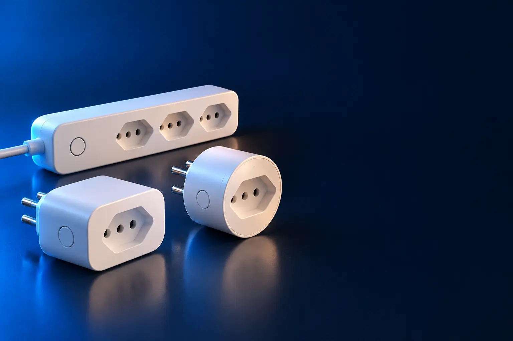

TOMADA INTELIGENTE
Melhor tomada inteligente custo-benefício
Liga e desliga aparelhos pelo celular, por voz ou por horário.

Melhor custo-benefício em tomada inteligenteEKAZA Tomada Inteligente 16 A (T005)
CURADORIA TECHAPROVADO · 2026
A tomada inteligente é o jeito mais barato de começar uma casa inteligente. Separamos 6 modelos em 2 perfis e dizemos para quem cada um vale a pena.

NOSSA LEITURA
Aparelhos comuns funcionam em 10 A ou 16 A. Ar-condicionado e aquecedor pedem 20 A. Para automatizar a luz pelo interruptor, use um módulo.
COMECE POR AQUI
TOMADA INTELIGENTE
Liga e desliga aparelhos pelo celular, por voz ou por horário.
MÓDULO PARA INTERRUPTOR
Deixa o interruptor da parede inteligente, sem trocar as lâmpadas.

A FICHA, TRADUZIDA
01 - CORRENTE
Ampère (A) é a corrente que a tomada aguenta. Na prática: 10 A para até cerca de 1.200 W em 127 V; 20 A para aparelhos fortes como ar-condicionado e aquecedor.
Veja o plugue do aparelho: pino mais grosso indica 20 A. Nunca ligue um aparelho de 20 A numa tomada de 10 A.
Na dúvida, some a potência (em watts) dos aparelhos e confira o limite da tomada no anúncio.
02 - WI-FI
Quase todas as tomadas inteligentes só funcionam em Wi-Fi de 2,4 GHz. Se o seu roteador usa uma rede só, misturada, a configuração pode falhar.
Em roteadores dual band, ative uma rede 2,4 GHz separada ou deixe o celular perto do roteador durante a configuração.
Paredes grossas e distância enfraquecem o sinal: teste antes em um cômodo próximo.
03 - ASSISTENTES
A tomada funciona sozinha pelo app da marca. Com Alexa ou Google, você comanda por voz e cria rotinas, como ligar a cafeteira quando o alarme toca.
Para começar, uma tomada com medidor de consumo já mostra quanto gasta a geladeira ou o ar-condicionado.
Horários programados funcionam mesmo sem assistente de voz.
04 - INTERRUPTOR
O módulo interruptor é instalado na caixinha da parede, atrás do interruptor comum. A luz passa a funcionar pelo interruptor, pelo celular e pela voz.
Alguns módulos precisam do fio neutro na caixinha. Confira a ficha e, se não souber, pergunte ao eletricista.
Desligue o disjuntor antes de mexer na fiação. Instalação errada pode causar choque.
A CURADORIA EM DETALHE
6 modelos da pesquisa
PERFIL · 4 MODELOS, DA ENTRADA AO TOP DE LINHA
A tomada inteligente fica entre a parede e o aparelho: liga e desliga pelo celular, pela Alexa ou pelo Google e por horários programados. As com medidor mostram quanto o aparelho gasta.
TOMADA · CUSTO-BENEFÍCIO 1 de 4
Melhor custo-benefício em tomada inteligente
16 A · medidor de consumo · Alexa e Google
Ver preço na AmazonPOR DENTRO DA ESCOLHA
Tomada inteligente de 16 A com Wi-Fi, medidor de consumo, horários programados e compatibilidade com Alexa e Google Assistente.
A tomada inteligente mais avaliada da loja, com quase 7 mil avaliações.
| Corrente | 16 A |
|---|---|
| Medidor | Sim |
| Assistentes | Alexa e Google |
Fonte: ficha e descrição do anúncio, conferidas em 02/11/2026. Dados informados pelo fabricante. Nota e número de avaliações são de compradores, não teste do TechAprovado.

TOMADA · ALTERNATIVA 2 de 4
Outro caminho: ecossistema Tapo
10 A bivolt · até 2.400 W · monitoramento e proteção
Ver preço na AmazonPOR DENTRO DA ESCOLHA
Tomada Wi-Fi bivolt de 10 A para até 2.400 W, com monitoramento de consumo em tempo real e proteção que desliga o aparelho quando o consumo passa do limite.
A proteção contra sobrecarga é rara nessa faixa de preço.
| Corrente | 10 A |
|---|---|
| Medidor | Sim |
| Proteção | Sobrecarga |
Fonte: ficha e descrição do anúncio, conferidas em 02/11/2026. Dados informados pelo fabricante. Nota e número de avaliações são de compradores, não teste do TechAprovado.

TOMADA · AVANÇADO 3 de 4
20 A · para aparelhos de alta potência · Alexa e Google
Ver preço na AmazonPOR DENTRO DA ESCOLHA
Tomada inteligente de 20 A com Wi-Fi 2,4 GHz, horários programados e compatibilidade com Alexa e Google Assistente.
A versão de 20 A aguenta os aparelhos que uma tomada de 10 A não aguenta.
| Corrente | 20 A |
|---|---|
| Assistentes | Alexa e Google |
Fonte: ficha e descrição do anúncio, conferidas em 02/11/2026. Dados informados pelo fabricante. Nota e número de avaliações são de compradores, não teste do TechAprovado.

TOMADA · TOP DE LINHA 4 de 4
Top de linha em tomada
16 A · padrão NBR 14136 · medidor · bivolt
Ver preço na AmazonPOR DENTRO DA ESCOLHA
Tomada inteligente bivolt de 16 A no padrão brasileiro NBR 14136, até 1.600 W, com monitoramento de consumo e app Positivo Casa Inteligente, compatível com Alexa.
Marca nacional com nota 4,8 e o ecossistema Positivo Casa Inteligente.
| Corrente | 16 A |
|---|---|
| Medidor | Sim |
| Padrão | NBR 14136 |
Fonte: ficha e descrição do anúncio, conferidas em 02/11/2026. Dados informados pelo fabricante. Nota e número de avaliações são de compradores, não teste do TechAprovado.
PERFIL · 2 MODELOS, DA ENTRADA AO TOP DE LINHA
O módulo interruptor é instalado dentro da caixinha da parede, atrás do interruptor comum. Ele deixa a luz controlável pelo celular e pela voz sem trocar as lâmpadas. A instalação mexe na fiação: chame um eletricista.
INTERRUPTOR · CUSTO-BENEFÍCIO 1 de 2
Melhor custo-benefício em interruptor
Módulo Wi-Fi · Alexa · automação residencial
Ver preço na AmazonPOR DENTRO DA ESCOLHA
Módulo interruptor Wi-Fi para automação residencial, que deixa luzes e outros aparelhos controláveis pelo celular e pela Alexa.
O módulo mais avaliado da lista, com mais de 1,3 mil avaliações.
| Tipo | Módulo Wi-Fi |
|---|---|
| Assistentes | Alexa |
Fonte: ficha e descrição do anúncio, conferidas em 02/11/2026. Dados informados pelo fabricante. Nota e número de avaliações são de compradores, não teste do TechAprovado.

INTERRUPTOR · ALTERNATIVA 2 de 2
Outro caminho: mini módulo
Wi-Fi + Bluetooth · mini · cabe na caixinha
Ver preço na AmazonPOR DENTRO DA ESCOLHA
Mini módulo embutido com Wi-Fi e Bluetooth (o Bluetooth facilita a configuração), controle pelo celular e por voz e horários programados.
O tamanho reduzido evita ter que trocar a caixinha da parede.
| Tipo | Mini módulo embutido |
|---|---|
| Conexão | Wi-Fi + Bluetooth |
Fonte: ficha e descrição do anúncio, conferidas em 02/11/2026. Dados informados pelo fabricante. Nota e número de avaliações são de compradores, não teste do TechAprovado.
Nenhum modelo encontrado. Tente outro termo ou volte para Todos.
LADO A LADO
| Modelo | Perfil | Posição | Corrente | Destaque | Nota (avaliações) |
|---|---|---|---|---|---|
| EKAZA Tomada Inteligente 16 A (T005) | Tomada | Custo-benefício | 16 A | 16 A · medidor de consumo · Alexa e Google | 4,7 (6,7 mil) |
| TP-Link Tapo P110 | Tomada | Alternativa | 10 A | 10 A bivolt · até 2.400 W · monitoramento e proteção | 4,8 (1,9 mil) |
| EKAZA Tomada Inteligente 20 A (T105) | Tomada | Avançado | 20 A | 20 A · para aparelhos de alta potência · Alexa e Google | 4,7 (2,8 mil) |
| Positivo Smart Plug Max 16 A | Tomada | Top de linha | 16 A | 16 A · padrão NBR 14136 · medidor · bivolt | 4,8 (931) |
| JWCOM Smart Interruptor Wi-Fi SA-01 | Interruptor | Custo-benefício | Módulo Wi-Fi · Alexa · automação residencial | 4,6 (1,3 mil) | |
| EKAZA Mini Módulo Embutido T109 | Interruptor | Alternativa | Wi-Fi + Bluetooth · mini · cabe na caixinha | 4,6 (641) |
CONSIDERAÇÕES FINAIS
Tomadas inteligentes custam quase o mesmo entre marcas, por isso a lista não tem escada de preço: cada modelo resolve um uso diferente.
A EKAZA 16 A com medidor de consumo.
Use uma de 20 A, como a EKAZA T105, e confira o plugue do aparelho.
Não. Ela funciona pelo app da marca; a Alexa acrescenta o comando por voz.
Muito pouco, menos de 1 W.
Porque ele muda várias vezes por dia. O botão leva ao valor atualizado na loja.
TRANSPARÊNCIA EDITORIAL
Separamos os modelos entre tomada e módulo para interruptor e, nas tomadas, pela corrente que aguentam. Cada modelo precisa responder com clareza "para quem ele é o certo".
Em cada perfil há modelos em faixas de preço diferentes, e cada degrau precisa entregar algo que o anterior não entrega. Dois modelos com a mesma proposta não entram juntos.
Ficha, nota e número de avaliações foram conferidos nos anúncios das lojas em 02/11/2026. As avaliações são de compradores, não teste nosso.
Os links de compra desta página são de afiliado: se você comprar por eles, o TechAprovado pode ganhar uma comissão, sem custo adicional para você. Isso não muda a ordem nem a escolha dos produtos.
📲 GUIAS E DICAS NO SEU FEED
Dicas práticas antes de comprar, em carrosséis e vídeos curtos, sempre com link para o guia completo.